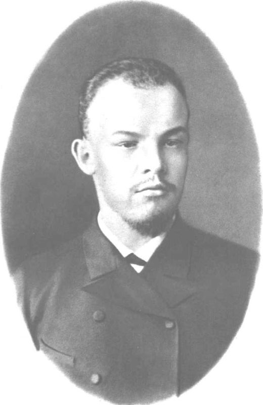

В первый том входят произведения, написанные В. И. Лениным в 1893–1894 годах, – в начальный период его революционной деятельности.
90-е годы ознаменовались для России быстрым развитием промышленности и ростом рабочего класса, общим подъемом рабочего движения. Высокая концентрация крупной промышленности способствовала сплочению и организованности рабочих. Значительно усиливается стачечная борьба. В среду рабочих стали проникать идеи марксизма.
С именем Ленина связано начало нового этапа в рабочем движении России. В своих произведениях 1893–1894 годов В. И. Ленин дал глубокий марксистский анализ общественно-экономического строя страны конца XIX века, определил основные задачи революционной борьбы рабочего класса и социал-демократии России. Ленин поставил перед российскими социал-демократами задачу создания марксистской партии. Творчески подходя к революционной теории марксизма, Ленин первым среди марксистов разрабатывает вопрос об особенностях предстоящей в России буржуазно-демократической революции, ее движущих силах и перерастании в революцию социалистическую.
В произведениях, вошедших в том, основной удар В. И. Ленин направляет против философских и экономических взглядов народников, их политической платформы и тактики, являвшихся в тот период главным идейным препятствием на пути распространения марксизма и социал-демократического движения в России. В этих работах Ленин выступает также против извращения марксизма в буржуазном духе представителями «легального марксизма».
Первый том содержит четыре произведения В. И. Ленина: «Новые хозяйственные движения в крестьянской жизни (По поводу книги В. Е. Постникова – «Южно-русское крестьянское хозяйство»)», «По поводу так называемого вопроса о рынках», «Что такое «друзья народа» и как они воюют против социал-демократов? (Ответ на статьи «Русского Богатства» против марксистов)», «Экономическое содержание народничества и критика его в книге г. Струве (Отражение марксизма в буржуазной литературе)».
Статья «Новые хозяйственные движения в крестьянской жизни», которой открывается том, – первая из сохранившихся литературных работ В. И. Ленина, написанная им еще в самарский период его деятельности, весной 1893 года. Эта статья показывает, с каким умением, самостоятельностью, глубиной и последовательностью молодой Ленин применял марксистскую теорию к изучению крестьянской жизни. Используя земские статистические данные, приводимые в книге Постникова «Южно-русское крестьянское хозяйство», и критикуя автора книги за непоследовательность и методологические ошибки, Ленин дает марксистскую характеристику положения деревни, вскрывает процессы и формы развития капитализма в сельском хозяйстве, разбивает народнический миф о якобы нетронутом капитализмом «общинном» крестьянстве. Он доказывает, что, вопреки народническим теориям, капитализм в России развивается с неудержимой силой, что крестьянство в действительности раскололось на непримиримые классы: сельскую буржуазию и сельский пролетариат, растущие за счет размываемого при капитализме среднего крестьянства. На основе богатейшего материала Ленин вскрывает мелкобуржуазный характер крестьянской общины, нелепость и вредность народнических представлений о крестьянской общине как основе социализма. Он доказывает, что в крестьянстве прочно укоренились буржуазные экономические отношения.
Статья «Новые хозяйственные движения в крестьянской жизни» была написана для легальной печати. В одном из писем того периода В. И. Ленин подчеркивает, что изложенные в ней положения служат для него основанием гораздо более важных и гораздо дальше идущих выводов, чем это сделано в самой статье.
К статье «Новые хозяйственные движения в крестьянской жизни» примыкают по своему содержанию пометки, вычисления и подчеркивания В. И. Ленина в книге В. Е. Постникова, которые печатаются в настоящем томе в разделе: «Подготовительные материалы». Некоторые из этих ленинских вычислений печатаются впервые.
В работе «По поводу так называемого вопроса о рынках», написанной осенью 1893 года, В. И. Ленин дал образец творческого применения экономической теории К. Маркса к изучению хозяйственных порядков в России. На основе глубокого знания «Капитала» Маркса, применяя диалектический метод, Ленин показал, как в результате роста общественного разделения труда натуральное хозяйство мелких производителей постепенно превращается в товарное, а товарное, в свою очередь, в капиталистическое, как это разделение труда неизбежно приводит к классовому расслоению производителей и росту внутреннего рынка. Таким образом, Ленин опроверг ходячие народнические теории о том, что развитие капитализма в России якобы не имеет под собой почвы, и доказал, что капитализм уже стал «основным фоном хозяйственной жизни России» (см. настоящий том, стр. 105). Одновременно он подверг критике утверждения Г. Б. Красина, которые впоследствии отстаивались «легальными марксистами», что капиталистическое производство необходимо требует внешних рынков для реализации прибавочной стоимости и что производство средств производства не связано с производством предметов потребления. Ленин показал, что подобные воззрения ничем по существу не отличаются от народнических взглядов по вопросу о рынках, и подчеркнул ту мысль, что марксисты должны заботиться не о рынках для буржуазии, а о развитии классовой борьбы пролетариата против буржуазии.
В работе «По поводу так называемого вопроса о рынках» Ленин развил положение Маркса о соотношении двух подразделений общественного производства, определив преимущественный рост первого подразделения, как экономический закон расширенного воспроизводства. На основе марксовой схемы воспроизводства он показал те изменения в расширенном воспроизводстве, которые происходят в результате технического прогресса.
Центральное место в первом томе занимает выдающийся труд В. И. Ленина «Что такое «друзья народа» и как они воюют против социал-демократов?», написанный весной – летом 1894 года.
В конце 1893 года журнал «Русское Богатство», вокруг которого группировались либеральные народники, и другие народнические журналы объявили поход против марксизма. В них печатались статьи, сознательно искажавшие марксистское учение об обществе, о революции, о социализме; народники грубо искажали взгляды русских марксистов. Не имея своих печатных органов в России, марксисты не могли дать достойную отповедь народникам в открытой печати. Большую роль в разгроме народничества сыграла книга Ленина, которая издавалась нелегально. В этом подлинном манифесте революционного марксизма, его программном документе, дана глубокая характеристика научного мировоззрения, диалектического и исторического материализма, экономического учения Маркса и всесторонняя критика философских, экономических и политических взглядов либеральных народников, их программы и тактики. В. И. Ленин показал, что политическая программа этих фальшивых «друзей народа» выражает интересы кулачества; он разоблачил либеральных народников как типичных реформаторов, которые, выступая против революционной борьбы с царским самодержавием, изображали его стоящим над классами и способным улучшить положение народа. В. И. Ленин вскрыл несостоятельность и ошибочность народнических теорий об особом, внекапиталистическом пути развития России и показал, как либеральные народники умышленно затушевывали факты капиталистической эксплуатации в деревне.
В своем произведении В. И. Ленин разоблачил теоретиков народничества как представителей антинаучного, субъективного метода в социологии, как идеалистов, отрицающих объективный характер законов общественного развития и решающую роль народных масс в истории. Народники полагали, что можно произвольно направлять ход истории согласно желаниям отдельных «выдающихся» личностей. Ленин разбил эти субъективистские взгляды и противопоставил им материалистическое понимание общественной жизни; он раскрыл содержание марксистского учения об обществе и показал, что ход истории обусловливается объективными законами развития, что главной движущей силой общественного развития является народ, классы, борьба которых определяет развитие общества.
В труде «Что такое «друзья народа» и как они воюют против социал-демократов?» В. И. Ленин впервые поставил перед российскими социал-демократами задачу создания марксистской рабочей партии и выдвинул идею революционного союза рабочего класса и крестьянства как главного средства свержения царизма, помещиков и буржуазии и создания коммунистического общества.
Подчеркивая великую историческую роль рабочего класса России, В. И. Ленин писал: «На класс рабочих и обращают социал-демократы все свое внимание и всю свою деятельность. Когда передовые представители его усвоят идеи научного социализма, идею об исторической роли русского рабочего, когда эти идеи получат широкое распространение и среди рабочих создадутся прочные организации, преобразующие теперешнюю разрозненную экономическую войну рабочих в сознательную классовую борьбу, – тогда русский РАБОЧИЙ, поднявшись во главе всех демократических элементов, свалит абсолютизм и поведет РУССКИЙ ПРОЛЕТАРИАТ (рядом с пролетариатом ВСЕХ СТРАН) прямой дорогой открытой политической борьбы к ПОБЕДОНОСНОЙ КОММУНИСТИЧЕСКОЙ РЕВОЛЮЦИИ» (стр 311–312).
Первый том заканчивается работой «Экономическое содержание народничества и критика его в книге г. Струве (Отражение марксизма в буржуазной литературе)», которая была написана Лениным в конце 1894 – начале 1895 года. По словам Ленина, она во многих отношениях является конспектом его позднейших экономических работ, особенно «Развития капитализма в России». В этом произведении В. И. Ленин показал, что народники являются представителями интересов мелкого производителя, что источник народничества – преобладание класса мелких производителей в пореформенной капиталистической России. Продолжая критику народнических воззрений, данную в предшествующих произведениях, Ленин в работе «Экономическое содержание народничества и критика его в книге г. Струве» показал чисто буржуазный характер экономических требований либеральных народников, утопичность и реакционность их политической программы, идеалистическую сущность их социологических взглядов.
Резко критикуя народническую систему взглядов, Ленин в то же время обращает внимание читателей на положительные, в глазах марксиста, черты и стороны народничества 60–70-х годов, как революционно-демократического течения в стране, переживавшей канун буржуазной революции.
Вместе с тем в этом произведении В. И. Ленин подверг критике извращения марксизма в буржуазном духе представителем «легального марксизма» П. Струве. Ленин разоблачил попытки «легальных марксистов» выхолостить революционное содержание марксизма и показал, что в основе взглядов «легальных марксистов» лежит буржуазный объективизм, означающий оправдание капитализма и затушевывание классовых противоречий. В струвизме, «легальном марксизме», Ленин увидел зародыш международного ревизионизма. В связи с критикой буржуазного объективизма В. И. Ленин обосновал принцип партийности общественной науки, философии. «… Материализм, – указывал Ленин, – включает в себя, так сказать, партийность, обязывая при всякой оценке события прямо и открыто становиться на точку зрения определенной общественной группы…» (стр. 419).
В. И. Ленин показал, что так называемый объективизм в науке в условиях буржуазного общества является прикрытием классовых корыстных интересов господствующих эксплуататорских классов. Марксистская наука, открыто и неразрывно связанная с рабочим классом, служит делу революционного преобразования общества, заинтересована в раскрытии законов общественного развития. Поэтому ее партийность совпадает с научностью.
Уже в ранний период своей революционной деятельности Ленин дал образец принципиальной критики различных лжесоциалистических и ревизионистских теорий, образец беззаветной борьбы за интересы рабочего класса. Произведения В. И. Ленина проникнуты творческим пониманием марксизма и мастерским применением его к анализу экономического и политического положения России, к определению задач, вставших перед российским рабочим движением.
Они учат международный пролетариат, коммунистические и рабочие партии всех стран уменью разоблачать многочисленных современных «друзей народа» и ревизионистов, пытающихся использовать рабочее движение в интересах буржуазии.
В приложениях к первому тому впервые в Сочинениях В. И. Ленина даются «Прошения В. И. Ульянова (Ленина) 1887–1893 гг.». Эти документы являются дополнительным материалом к биографии В. И. Ленина. Два прошения: в Самарский окружной суд от 5 января 1893 года и председателю Самарского окружного суда от 16 августа 1893 года – печатаются впервые.
Институт марксизма-ленинизма при ЦК КПСС
В. И. Ленин (1890–1891)